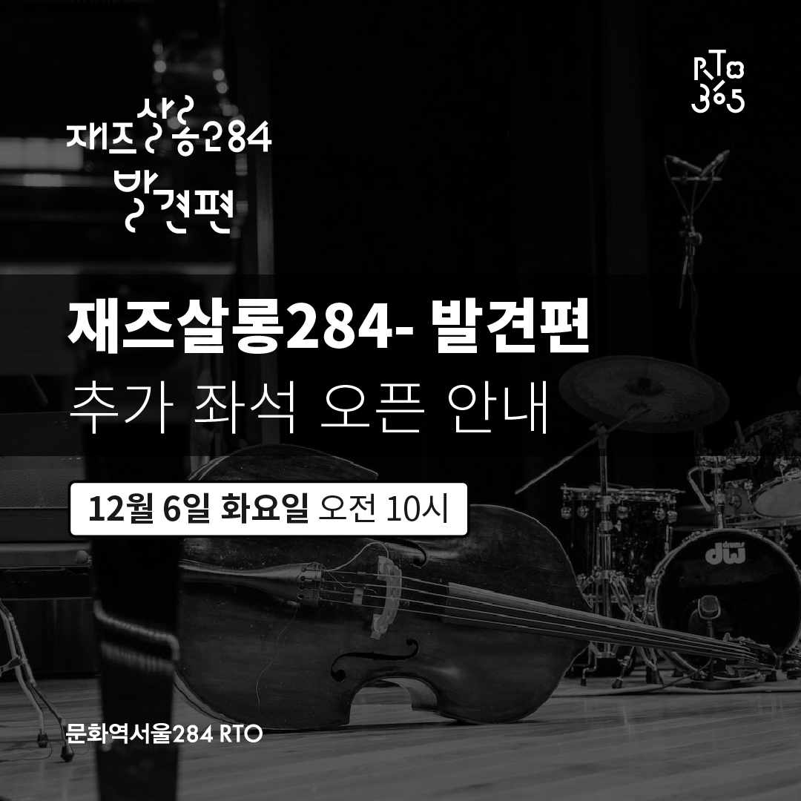
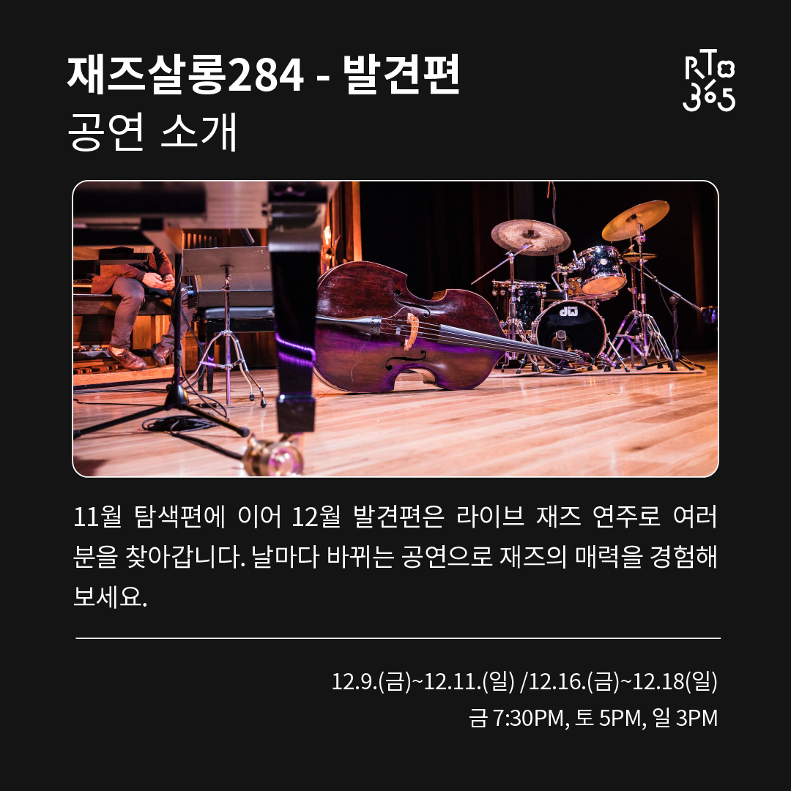
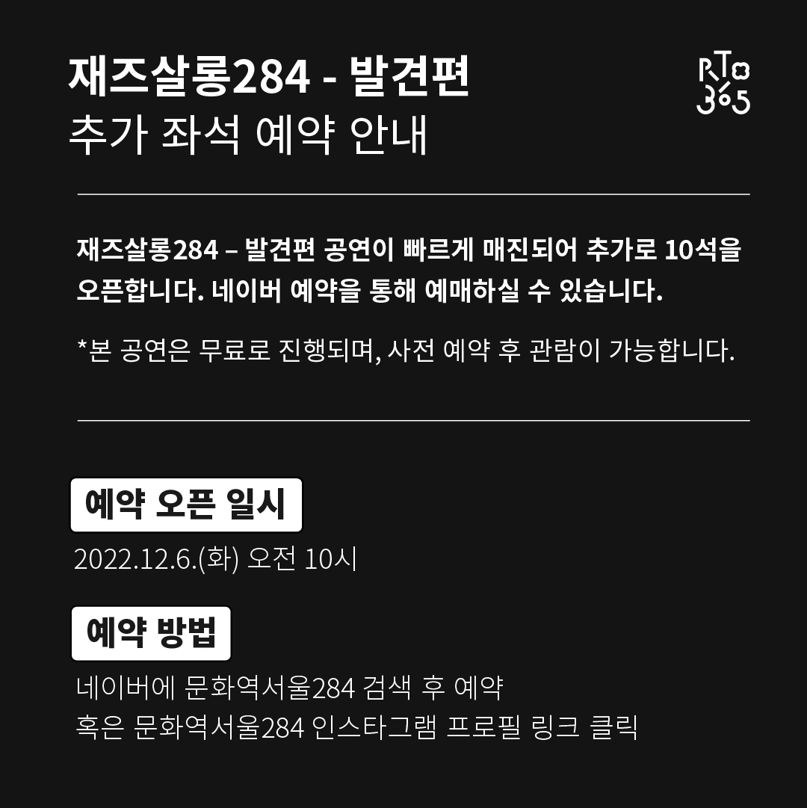

취향을 찾아가는 차분한 탐구의 과정에서 맞이하는 깨달음의 순간은 선물과 같습니다.
12월의 RTO365는 생생한 재즈 연주를 들어보며 ‘나의 재즈’를 찾는 발견의 시간이자
쉼 없이 달려온 올해, 우리의 수고와 노력에 박수를 보내는 환호의 공간이 됩니다.
11월 <재즈살롱284 - 탐색편>에서 어둠 속 희미한 빛을 찾듯 새롭거나 익숙한 재즈 음악에 차분히 귀 기울였다면,
12월 <재즈살롱284 - 발견편>에서는 눈이 번쩍 뜨이고 귀가 활짝 열리는 라이브 재즈 연주로 황홀함과 자유로움을 경험해 보세요.
환한 불빛, 그리고 재즈를 사랑하는 사람들로 가득 찰 12월 RTO에서 2022년에 대한 여러분의 기억이 더욱 따뜻해지기를 바랍니다.
[공연 개요] *사전 예약 필수
- 일시: 2022.12.09.(금)-12.18.(일)｜금 7:30PM, 토 5PM, 일 3PM
- 장소: 문화역서울284 RTO
[공연 예약하기] *현재 예약 마감 / 취소표 발생 시 추가 예매 가능
- 예매 바로가기: https://bit.ly/jazzsalon284_concert
*매진 시 예약창이 활성화되지 않습니다.



[공연 라인업]
1주차

12/9(금) 19:30 “오종대 쿼텟”
드럼 오종대｜피아노 이한얼｜베이스 이승하｜비브라폰 김예찬
재즈씬에서 가장 활동적인 여주를 펼치는 드러머 오종대의 쿼텟.
리듬감 넘치는 드럼 사운드와 도시적이며 세련된 비브라폰 연주로 <재즈살롱284 발견편>의 문을 연다.

12/10(토) 17:00 “배장은&이지민 쿼텟”
피아노 배장은｜보컬 이지민｜색소폰 여현우｜베이스 윤종률
에너지 넘치는 재즈 피아니스트 배장은과 섬세한 보컬리스트 이지민,
따뜻한 색소포니스트 여현우, 베이시스트 윤종률이 조화로운 사운드를 선사한다.

12/11(일) 15:00 “최현우 트리오”
피아노 최현우｜드럼 조남혁｜베이스 윤종률
주옥같은 재즈 스탠다드를 화려한 테크닉으로 연주하는 최현우 피아노 트리오.
화려함과 섬세함이 돋보이는 연주를 만나볼 수 있다.
2주차

12/16(금) 19:30 “장은성 트리오”
피아노 장은성｜베이스 조민하｜드럼 이석현
클래식 연주에 기반을 둔 서정적이며 모던한 연주자인 피아니스트 장은성.
미발표 자작곡과 크리스마스 캐롤을 최근 구성된 그의 피아노 트리오를 통해 선보인다.

12/17(토) 17:00 “현용선 밴드”
기타&보컬 현용선｜피아노 이미영｜베이스 원현조｜드럼 김소희
전통 재즈 기타리스트이자 보컬리스트인 현용선이
그의 쿼텟 용투더썬과 함께 '재즈가 좋아지는 발견의 시간'을 선사한다

12/18(일) 15:00 “이영주 쿼텟”
보컬 이영주｜기타 나영찬｜드럼 최요셉｜베이스 윤종률
차분하면서도 감성 넘치는 보이스와 개성있는 스캣으로 곡을 해석하는 보컬리스트 이영주가
그녀의 기타 쿼텟과 함께 <재즈살롱284 발견편>을 마무리한다.